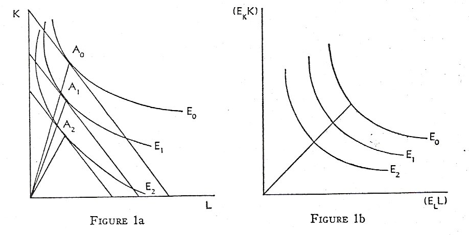

In this article, the role of efficiency in the growth of the New Zealand agricultural sector is analysed. Productivity measures based on gross product/gross input ratios, net product/factor input ratios, neutral technology production functions and production functions based on biased factor efficiency growth are examined. It is convenient to define first the terms and symbols employed, and then proceed to the analysis of a model based on factor-augmented technological growth, followed by tests of its explanatory power for the period 1945-67.
Two aggregate production functions are assumed in this study, one defined for the gross output of the sector and the other for net output or the more usual value-added concept. For space reasons, the net output model is used to illustrate the major conclusions drawn. The net output production function can be expressed as
Q = f(L,K,t) | (1) |
and the gross output function as
QG = F(L, K, M, t). | (2) |
For equation (2) the profit-maximization equation can be expressed as
IIG = PQG -WL - RKf - SM, | (3) |
where the symbols have the following meaning:
QG = gross output of the agricultural sector in real terms in March years,
L = annual manpower employed full-time,
K = real capital stock employed as at 1 April of the April-March production year,
Kf = annual flow of real capital services,
* This paper is the fruition of a long-term programme in agricultural productivity research initiated by Professor B. P. Philpott at Lincoln College. The author is particularly indebted to the earlier work of D. D. Hussey and T. W. Francis, who solved many of the initial problems involved in the analysis. Computing work was undertaken on an IBM 1130 by A. D. Meister, which is also gratefully acknowledged.
MARCH 1972 | GROWTH IN N.Z. AGRICULTURE | 77 |
M = index of physical quantity of non-factor inputs,
t = a time factor representing technical change.
To define the product prices of inputs and net output, the following price series are required:
P = aggregate product price index,
W = index of money wage rates,
R = index of money cost of capital replacements,
S = index of money cost of unit non-factor inputs.
Thus,
w = W/P = real product price of labour,
r = R/P = real product price of capital,
s = S/P = real product price of non-factor inputs,
and,
Q = (PQG - SM)/P = net real output in the current period,
FL = wL/Q = factor share of labour in net output,
FK = rK/Q = factor share of capital in net output (obtained by difference),
We = a weather variable based on January, February and March rainfall at Ruakura, Hamilton.
If the product price index is taken as numeraire in equation (3), the profit-maximization equation in real terms is obtained:
IIG = QG -wL - rKt - sM, | (4) |
In general, it is useful to represent capital as a flow of services in setting out the models, although in estimation the stock series is used as a proxy throughout.
The sources of the data are set out in a series of Agricultural Economics Research Unit publications of various dates. The original data series are those devised by Philpott and Stewart [9],1 later updated by Philpott, Ross, McKenzie, Yandle and Hussey [10], and Philpott and Hussey [8]. The capital series have been re-estimated on a replacement-cost basis since the above series were published and are found in a recent paper by the author [5].
Gross output data are based on official government series, but the manpower series, capital stock series and non-factor input series are all derived from official statistics by the above authors. The capital stock series is estimated on a replacement-cost basis and is independent of the valuation method employed formerly. It is also estimated without explicit depreciation rates being required and hence is not subject to the usual criticisms of stock series based on the perpetual inventory method. The series on non-factor inputs is based on a gross farm expenditure approach and could be biased upwards by the inclusion of many capital expenditure items which now contribute to the capital stock series.
78 | THE ECONOMIC RECORD | MARCH |
The product price series is the implicit index obtained by taking the ratio of an index of the official series of gross farm income to one of gross farm output. The index of farm wages is based on an official index of farm wage rates as modified by Philpott and Hussey. In the model it is assumed that self-employed operators have an opportunity cost equal to wage employees. The index of capital replacement prices is based on the relative eost of all farm improvements, as given in Philpott and Hussey, and does not include an allowance for prices of new plant or livestock purchases. The price series for non-factor inputs is also given by Philpott and Hussey and is a weighted index of all the main farm inputs used in New Zealand.
Efficiency Defined
The specific way in which efficiency growth enters the various productivity models is detailed below, but it is appropriate to indicate at this stage just what efficiency means to the author. Two distinct types of efficiency can be distinguished. Firstly new equipment is usually better, i.e. more productive, other things unchanged, than the equipment replaced. It is often assumed that prices reflect this greater productivity, but in some cases other factors could make productivity quite im;ariant to prices. Other inputs used in agriculture (relevant to the gross output function) are also more productive in this sense, especially new, weedicides and pesticides, trace elements, new crop varieties and genetically better livestock.
The second operational concept of efficiency is in the management area. Better management is synonymous with the 'education' of the entrepreneur and his employees in that new skills of farming are learnt that enable new technology to be incorporated in the day-to-day running of the farm enterprise. Kew combinations of factors can be contemplated and, in the present context, labour-saving use of capital and farm layouts can be accommodated in the entrepreneur's mental approach to his work. The basic point is that managing new kinds and levels of resources is a skill that is slowly but continually being learnt by farmers. Increased labour productivity is achieved largely by adapting management to the labour-saving opportunities available.
The reader will recognize in this description the standard definitions of capital-embodied and -disembodied technological change. Given a single stock of capital, the analysis to follow focuses on disembodied technological change alone.
Measures of Effidency Growth
The major study in the area of gross productivity is the work of Philpott [7]. Using the data referred to in [9], he constructed an annual gross productivity ratio, It, for quinquennial periods from 1920 to 1960 and estimated growth rates, gG, from the standard formula
It = I(o)egGt | (5) |
where, using the symbols set out above,
| 1972 | GROWTH IN N.Z. AGRICULTURE | 79 |
It = ( (POQG) / WOL + ROK + SOM)t | (6) |
Thus the productivity ratio is annual gross output divided by aggregate inputs valued at base-year prices, in this case those of 1949-50.
The base-year price of capital is taken as a fixed charge of 5 per cent; thus the cost of capital services is shown as this proportion of current capital stock employed. Calculated in this way, the sum of inputs does not necessarily exhaust product, although it will in those cases where the residual sum imputed to capital is just equal to 5 per cent of stock.
Quinquennium | Output growth | Input growth | Growth in output per unit of all inputs |
| 1920-25 | 2.4 | 1.9 | 0.7 |
| 1925-30 | 4.5 | 2.3 | 2.1 |
| 1930-35 | 2.9 | 1.0 | 1.9 |
| 1935-40 | 1.6 | 1.6 | 0.2 |
| 1940-45 | 1.9 | 1.6 | 0.5 |
| 1945-50 | 1.3 | 2.1 | -0.9 |
| 1950-55 | 2.3 | 2.3 | 0.0 |
| 1955-60 | 3.4 | -0.1 | 3.5 |
| Whole period | 2.6 | 1.6 | 1.0 |
Table I summarizes the Philpott results. Apart from the marked quinquennial variations in growth rates, the main result suggests a long-term gro,vth of productive efficiency of 1 per cent a year over and above increases in the levels of real resources employed. Of the total growth in output, some 60 per cent is explained by increased input of resources and 40 per cent by better technology.
In subsequent revisions of Philpott's basic data [10], [8], the trend in long-run productivity was recalculated. For the period 1920-65 the following equation was fitted to the data:
It = 85.4e0.007t; | (7) |
and for the period 1920-67, the additional years and small revisions in the data gave the following fitted equation:
It = 80.6e0.009t. | (8) |
Apparently the measure of rate of growth of gross productivity is fairly sensitive to changes in aggregate input. High levels of investment and use of current inputs tend to depress the productivity ratio in the short run, and output also tends to be sustained for a period after high investment levels decline, thus increasing the ratio again.
80 | THE ECONOMIC RECORD | MARCH |
In general the long-run growth of gross productiyity approximates to very nearly 1 per cent a year.
In a more recent investigation Hussey has developed the production function approach to productivity analysis [3]. Following Solow [11], the production function in equation (1) is expressed with technology as a multiplicative factor as follows:
Q = A(t) f(L, K). | (9) |
As is well known, the function can only be written in this way if technological change is neutral, i.e. such as to leave the marginal rate of substitution behveen capital and labour unaltered at a given factor ratio. Constant returns to scale are also assumed. By differentiating with respect to time (with the time derivatives expressed in the form Q´/Q, etc.), and defining the profit-maximization factor shares as follows:
α = dQ/dL.L/Q, β = dQ/dK.K/Q, | (10) |
the Solow growth equation is obtained:
Q´/Q = A´/A + α L´/L + β K´/K: | (11) |
If λ is neutral technological growth, and subscripted g represents real output and factor gro\vth, then the growth equation can be expressed as
λ = gQ - α gL - β gK. | (12) |
Hussey only works with net output, and the above equation expresses the accepted proposition that neutral technological growth is equivalent to the growth of net output less the weighted sum of factor growths. If the weights or elasticities are calculated from average or base-year factor shares or some other base, the resulting estimate of λ can vary considerably.
Table II summarizes Hussey's main results. The basic data used are the same as for the Philpott analysis but have been up-dated by seven years. Factor output is defined in the same way as in this paper. Over the long period, neutral technological growth is now estimated as 1.32 per cent a year if average factor share weights are acceptable.
TABLE II
Annual Percentage Rate of Increase in Factor Output due to Technological Advance, from Hussey [3]
Growth rates |
1921-67 |
1921-40 |
1946-67 |
1951-67 |
Factor output |
1.97 |
3.06 |
2.81 |
3.32 |
Technology with base-year weights |
1.08 |
1.81 |
1.06 |
1.67 |
Technology with average factor share weights |
1.32 |
1.91 |
1.29 |
1.95 |
| 1972 | GROWTH IN N.Z. AGRICULTURE | 81 |
In the sub-periods considered by Hussey, somewhat higher growth rates are apparent, as Philpott's results also indicated.
Factor output increases at a slower rate than gross output (1.97 per cent compared with 2.60 per cent approximately), thus indicating that over the long run an increasing share of product has been required to reward non-factor inputs. According to Philpott [7, p. 29], the long-run growth in non-factor inputs has been 3.5 per cent a year, so that the increasing share of product required is apparently a volume effect and not a price effect over the whole period.
The problem of weighting with average factor shares can be overcome by fitting a Cobb-Douglas type function to the time series data.
If the factor elasticities are not constrained, an estimate of the returns to scale can also be obtained. Technology is still assumed to be neutral in its effect on factor productivities. For the period 1921-67, Hussey fitted the following equation:
In Q = -3.26 + |
0.68 ln L + (0.19) |
0.53 ln K + (0.16) |
0.014 t. (0.003) |
(13) |
The coefficients were all significant at the 1 per cent level, and R2 = 0.92. Because the Durbin-Watson statistic was unsatisfactory (d = 1.07), he further investigated several auto-regressive processes to correct for any resulting bias in the estimated standard errors. This resulted in lower estimates of the factor elasticities (so that constant returns to scale were indicated) but no change in the technology coefficient. Apparently the Cobb-Douglas result differs very little from the more direct estimate obtained from the Solow equation. Hussey does not present any Cobb-Douglas functions for sub-periods, owing to multicollinearity problems.
For the post-war period, 1946-67, the author has estimated neutral technology growth rates for a gross output and a net output production function of the Cobb-Douglas type. The variables employed are identical with Hussey's except for the capital stock, K, for which the new series based on replacement cost was available. The two equations fitted were as follows:
(a) ln Q = 17.66 - |
1.94 ln L - (1.15) |
0.40 ln K + (0.78) |
0.025 t. (0.020) |
(14) |
R2 = 0.96; d = 1.20.
(b) ln Qg = 16.24 - |
2.05 ln L - (0.43) |
0.07 ln K + (0.34) |
0.02 ln M + (0.03) |
0.017 t. (0.009) |
(15) |
R2 = 0.99; d = 1.40.
These results are not acceptable due to the high intercorrelation of trend with all the variables except M. It is apparent that a simple growth equation of output and trend would have almost the same explanatory power in this period. Thus,
82 | THE ECONOMIC RECORD | MARCH |
ln Q = 5.23 + |
0.0292t (0.001) |
R2 = 0.95 | (14) |
and
ln QG = 5.72 + |
0.0301t (0.001) |
R2 = 0.98 | (17) |
Taking average factor shares for the period, and applying equation (12), results in an estimate of technological growth in equation (16) of 1.89 per cent a year, and in equation (17) of 1.47 per cent.2
These rates of growth are higher than those indicated for the same period in Table I from Philpott's study but still lower than those estimated by Cobb-Douglas methods if these were statistically acceptable. Hussey's result for the same period, based on the net output growth equation, was a growth rate in technology of 1.58 per cent. Since his measure of capital stock increased annually at 3.4 per cent over the period, a lower rate of growth of technological advance results.
Efficiency Growth in Factors of Production
The concept of factor efficiency growth emerges clearly in constant elasticity of substitution (C.E.S.) production functions when the elasticity of substitution (σ) is not equal to one. This section shows briefly how technology can be incorporated in a more general production function of the C.E.S. type and the economic properties of the model that results.
The basic notion in the model is that factor inputs in the production function are defined in efficiency units so that the relative marginal productivities of the factors, as defined, remain constant. The model set forth below assumes profit maximization in the long term and constant returns to scale. The two-factor case is presented iil detail, but the three-factor case is considered briefly towards the end of this paper.
The C.E.S. production function for New Zealand agriculture in the aggregate is written:
| Q = [(EL.L)p + (EK.K)p]1/p | (18) |
where EL represents the growth in labour efficiency, EK the growth in capital efficiency, and p is the substitution parameter representing the ratio 1 - 1/σ.
As shown below, exponential growth of factor efficiency must be assumed before the necessary estimating equation is properly identified. For this purpose, it is therefore assumed that in any year
| EL(t) = EL(o)eλLt | (19) |
and
| EK(t) = EK(o)eλKt | (20) |
where λL and λK measure the growth of the different factor efficiencies respectively.
2gK = 2.44, gL = -0.69, gM = 2.32; FL for (16) = 0.45, FL for (16) = 0.55, FL for (17) = 0.27, FK for (17) = 0.33, FM = 0.40.
| 1972 | GROWTH IN N.Z. AGRICULTURE | 83 |
Changes in factor efficiency are interpreted as labour-augmenting or capital-augmenting technological advances by the respective growth paths of (19) and (20). It should be noted particularly that an increase of EL is labour augmenting even if technical change enters the production function through better equipment [1], [12]. If the elasticity of substitution is less than unity, labour-augmenting and capitalaugmenting bias in technical change amounts to the same thing as labour-saving and capital-saving advances respectively [1]. Equal rates of factor efficiency gro'wth are equivalent to neutral technical changes discussed earlier.
The identification problem in C.E.S. production function analysis arises out of the effect of unequal (biased) factor efficiency growth on the slope of the substitution isoquant between the factors.3 It was first pointed out by Diamond and McFadden in an unpublished paper, and later amplified by Nerlove [6]. In Figure I factor isoquants are shown for factor's measured in conventional units and in the proposed efficiency units.
 FIGURE la FIGURE IbIn Figure 1a, E0, E1, E2 represent the same isoquant in different periods of time with conventional factor inputs. Biased efficiency growth is evident in the greater gains in labour efficiency relative to capital efficiency as one period succeeds another. At A0 the elasticity of substitution (σ) is represented by the ratio of the change in relative ractor inputs to the relative change in the marginal rate of substitution between them. In moving the isoquant to A1, the elasticity of substitution must change as the factor ratio is changing with an unchanged price ratio.
The identification problem is that biased efficiency growth and the elasticity of substitution are both varying simultaneously and one must be helel constant by some means to isolate the other.
In Figure 1b, the axes represent the proposed efficiency measures
3 This section is based on original work by T. W. Francis, whose considerable help in explaining the problems involved is again acknowledged. The interpretation given is solely that of the author however.
84 | THE ECONOMIC RECORD | MARCH |
of factor inputs. By defining efficiency units in terms of relative productivity, the shift in the isoquant is now normalized, and the marginal rate of substitution between the factors remains the same for constant ratios of the factors measured in efficiency units. Efficiency growth is now embodicd in the factors of production, and a method is established of identifying thc aggregate production function.
Nerlove [6, p. 92] quotes Diamond and McFadden on this point as follows,
'. . . it is, in fact, impossible to measure either the bias or the elasticity [of substitution] ; i.e., given the time series of all observable market phenomena for a single economy which has a neo-classical production function, these same time series could have been generated by an alternative function having an arbitrary elasticity or arbitrary bias at the observed points. This statement is subject to the limitations that in the absence of technical change one can measure the elasticity of substitution (and trivially the bias, which is zero) while in the absence of a change in the capital-labor ratio one can determine the bias.'
Finally, it is useful to set out the economic properties of the proposed aggregate production function.
(i) The marginal products of the factors are proportional to their relative efficiencies,
| i.e. | δQ/δK = δQ/δKE.EK | (21) |
where δQ/δKE is the marginal product of an additional efficiency unit of a factor.
(ii) The marginal rate of substitution is defined in terms of conventional factor inputs, or relative efficiencies from (21) above,
| i.e. | R = w/r = (δQ/δL)/(δQ/δK) = (δQ/δL).EL/(δQ/δKE).EK | (22) |
(iii) The elasticity of substitution is now a measure of a relationship between factors measured in efficiency units,
| i.e. | σ = d(EKK/ELL)/(EKK /ELL) / d(w/r)/(w/r). | (23) |
Thus the marginal rate of substitution is defined in terms of conventional inputs and the price ratios, but the elasticity of substitution is defined in terms of the efficiency measures of inputs in relation to the conventional marginal rate of substitution.
Estimation Procedures
Estimates of σ and λL and λK are obtained from the marginal product side relations of equation (18). With some algebraic manipulation, five different estimation equations can be derived.
(1) If (18) is differentiated with respect to L, and rearranged slightly, the following expression for the real wage rate is obtained:
| w = E L p (Q/L)1 - p | (24) |
from which,
| Q/L = w 1/1 - p EL - p/ 1 - p | (25) |
| 1972 | GROWTH IN N.Z. AGRICULTURE | 85 |
This can be expressed in logarithms for estimation purposes as
| ln Q/L = 1/1 - p ln w + [1 - (1/1 - p)] ln EL. | (26) |
Since EL has no absolute value, it is now appropriate to substitute equation (19) in place of this term to obtain
| ln Q/L = α + σ ln w + (1 - σ) λ L t | (27) |
where
α = (1 - σ) ln E L(o).
The estimating equation is identified by the assumption of exponential factor efficiency growth and analysis could not proceed without it. In effect equation (27) simply states that conventional labour productivity will vary with the price of labour and changes in labour efficiency growth.
(2) With independent data on K, it is also possible to estimate the corresponding equation for capital productivity, i.e.
| ln Q/K = α + σ ln r + (1 - σ) λ K t. | (28) |
(3) Next, equation (24) can be combined with the corresponding marginal productivity equation for capital to give the factor proportion estimating equation. Thus
| w/r = (EL/EK)p (K/L)1-p | (29) |
Rearranging,
| K/L = (w/r)1/1 - p (EL/EK) - p/1 - p. | (30) |
Taking logarithms,
| ln K/L = σ ln w/r + (1 - σ) ln EL/EK. | (31) |
Now assume relative factor efficiency grows exponentially,
| EL(t)/EK(t) = (EL(o)/EK(o)) e(λL -λK)t ; | (32) |
then the resulting estimation equation becomes
| ln K/L = α + σ ln w/r + (1 - σ)(λL - λK)t | (33) |
| where | α = (1 - σ) ln EL(o)/EK(o). |
(4) If equation (30) is multiplied by (L/K)σ and rearranged, the factor ratio equation can also be expressed in terms of factor shares, i.e.
| K/L = (FL/FK)σ/l - σ (EL/EK) | (34) |
which in turn gives the following estimating equation:
| ln K/L = α + (σ/1 - σ) ln FL/FK + (λL - λL)t | (35) |
where
| α = ln EL(o) / EK(o). |
86 | THE ECONOMIC RECORD | MARCH |
(5) Equation (25) can also be expressed in terms of factor shares if it is inverted and multiplied by 10
| wL/Q = w - p/1 - p EL p/1 - p | (36) |
which in turn gives the following estimation equation
| ln FL = α + (1 - σ) ln w + λL(σ - 1)t | (37) |
where
α = (σ - 1) ln EL(o).
The corresponding factor share for capital is not estimated as the ratio rKf /Q is only known by residual imputation.
The Hussey Results
Hussey [3] investigated equations (27) and (33) in his study, and found significant coefficients for both the price variables and trend in the periods he studied. Table III snmmarizes his main results.
Autocorrelation was present in most of the equations estimated and experiment with auto-regressive error systems failed to improve the Durbin-Watson statistics markedly. In interpreting the estimates of the elasticity of substitution, Hussey suggests that the marginal conditions assumed are too severely breached to make the estimates acceptable, and the estimates from the K/L relation are probably not significantly different from zero anyway. Most of the change in labonr productivity and the factor ratio is explained by the trend variable alone. Hussey draws attention to the significant role of the main product price deflator in the data series, as the real prices of the factors incorporate all the fluctuations in this series. In short, Hussey concluded that the capital/labour ratios and the labour productivity ratios were unresponsive to annual changes in the real price of factors, and his model built on annual observations was inappropriate.
Some Further Hypotheses
In any consideration of aggregate output it would be fair to infer that entrepreneurs in an industry like agriculture would be slow to
TABLE III
Coefficients of C.E.S. Production Functions for New Zealand
Agriculture, from Hussey [3]
| Dependent Variable: Q/L | Dependent Variable: K/L | |||||
| Period | σ | λL | R² | σ | λL - λK | R² |
| 1921-67 | 0.05 | 0.0254** | 0.94 | 0.06* | 0.0240** | 0.93 |
| 1921-40 | -0.36** | 0.0221** | 0.73 | 0.01 | 0.0077** | 0.65 |
| 1946-67 | 0.17* | 0.0320** | 0.97 | 0.05* | 0.0383** | 0.99 |
| 1951-67 | 0.40** | 0.0258 | 0.98 | -0.04 | 0.0415** | 0.99 |
** Regression coefficient significant at 1 per cent level. All growth coefficients shown depend upon estimated value of σ as shown in equations (24) and (25).
| 1972 | GROWTH IN N.Z. AGRICULTURE | 87 |
respond to price changes in factors of production especially when product prices themselves were uncertain. As is well known, the dilemma posed by Hussey can be represented in a distributed lag system but only with considerable violation of the statistical assumptions needed to apply Durbin-Watson tests, especially in view of the trouble with auto-regressive problems already encountered by Hussey. In this section the investigation of an adjustment hypothesis is duly reported, and perhaps the reader should decide for himself whether the attempt was worthwhile. A seasonal variable representing weather influences on agricultural output is also briefly considered.
For the labour productivity equation (24), Q/L* can be defined as the long-run productivity ratio when all adjustments to prices are complete. Thus
| ln Q/L* = α + σ In w + λL (1 - σ)t. | (38) |
The relationship between the long-run factor productiyity ratio and the obseryed short-run or annual ratio is expressed in the typical adjustment equation
| ln Q/L - ln Q/L - 1 = (ln Q/L* - ln Q/L - 1), 0 < ∅ < 1 | (39) |
which is based on the supposition that the ratio or Q/L to Q/L- 1 is an exponentially weighted average, ∅, of the ratio of Q/L* to Q/L- 1 [1].
The coefficient, ∅, measures the proportion of total adjustment reached in one period, in this case one year.
The adjustment equation is next re-arranged as
| ln Q/L = ∅ ln Q/L* + (1 - ∅) ln Q/L - 1 | (40) |
and equation (38) is substituted for ln Q/L* to give
| ln Q/L = 0 α ln w + 0 λ L (1 - 0 ) ln Q/L - l. | (41) |
If the coefficients of the estimating equation are b1...b4, the estimated parameters are interpreted as follows
|
b1 = ∅(1 - σ) ln E L(0) b2 = ∅ σ b3 = ∅ λL(1 - σ) b4 = (1 - ∅). |
It is plausible that the factor ratio, K/L, and the factor share, FL, also respond in a delayed adjustment pattern to changes in prices, and that equations involving these ratios as dependent variables can be treated in the same way as the labour productivity ratio above. The derivation of the appropriate estimation equations is similar though the estimated coefficients have a different meaning in each case. To save space, details are not shown here.
The influence of weather factors on New Zealand farm output was established by the author in an earlier paper [4]. It was found that the variable, QG was markedly influenced by a weather index based on
88 | THE ECONOMIC RECORD | MARCH |
summer rainfall in the Waikato basin, one of the principal dairying areas of the country. Further inyestigation of the post-war period showed that a similar effect could still be detected in more recent output data, lending support to the hypothesis that some of the annual variation in net output could be explained by the random influence of the weather.
Such influences will not enter the basic economic equation of longterm adjustment in (38) but must be regarded as an additional variable in the estimation equation itself, whenever actual output is contained in the dependent variable. The weather factor, We, does not enter the K/L equation at all.
Thus the final estimating equation for the labour productivity ratio can be set out as follows:
Where the estimating coefficients have the same meaning as defined in equation (41).
The Results
The five equations appropriate to the net output production function are summarised in Table IV. The period investigated is 1946-67 throughout. The parameters are discussed in turn.
The adjustment parameter is not significant in three years out of five, and only for K/L is there a a marked inter-year relationship observed in many studies of this sort. For the productivity ratios, the
TABLE IV
Estimated Coefficients of Adjustment Model of Net Output C.E.S.
Production Function, 1946-67
| Dependent variable | Adjustment parameter | Substitution parameter | Growth parameter | Weather parameter | R² |
| (25) Q/L | 0.298 | 0.146 | 0.0169 | 0.011 | 0.915 |
| (0.18) | (0.05) | (0.006) | (0.02) | ||
| (28) Q/K | 0.288 | 0.097 | 0.00038 | 0.016 | 0.408 |
| (0.18) | (0.06) | (0.002) | (0.02) | ||
| (33) K/L with w/r | 0.820 | -0.035 | 0.0075 | 0.999 | |
| (0.104) | (0.034) | (0.002) | (0.02) | ||
| (35) K/L | 0.681 | 0.004 | 0.0105 | 0.999 | |
| FL/FK | (0.094) | (0.006) | (0.003) | ||
| (37) FL | -0.065 | 0.981 | -0.0344 | -0.028 | 0.981 |
| (0.04) | (0.04) | (0.002) | (0.015) | ||
| Derived parameter | ∅ | σ | Growth | ||
| (25) | O.70 | 0.21 | λL = 0.0305 | ||
| (28) | 0.71 | 0.14 | λK = 0.006 | ||
| (33) | 0.18 | -0.19 | λL - λK = 0.0355 | ||
| (35) | 0.32 | 0.01 | λL - λK = 0.0328 | ||
| (37) | 1.06 | 0.08 | λL = 0.0370 |
| 1972 | GROWTH IN N.Z. AGRICULTURE | 89 |
rate of adjustment appears fairly rapid, if the estimated coefficients can be taken at their face value, while for the factor ratio, adjustment is slow, as suspected earlier.
The substitution parameter is only significant in two cases out of five and, except for the perverse sign in equation (33), gives uniformly low estimates of the elasticity of substitution. In fact, the result is not markedly different from that established by Hussey for the period set out in Table III.
The growth parameter is significant in four cases out of the five, and clearly indicates a pattern of labour efficiency growth in the period concerned, with a zero or slightly negative growth of capital efficiency. This important result is discussed later.
The weather parameter is not significant. This may be because the seasonal effect lies more in QG and not Q, or it may be obscured in the ratios taken as dependent variables. In equations (25), (28) and (37) the same estimates of the derived parameters were obtained when the weather variable was omitted. Further testing of this variable, carried out when gross output was considered the dependent variable, also provided inconclusive results.
For the record, the Durbin-Watson statistics for equations (25), (28), (33) and (35) are all normal, and only equation (37) exhibits serial correlation in its estimated residuals. There are also marked inter-correlations between independent yariables in equations (33 ) and (34): trend, K/L and K/L-1 are all hard to distinguish from each other. The omission of the offending variables reduces the estimating equation to the form used by Hussey, which he found unsatisfactory from the auto-correlation point of yiew. It can be observed, however, that the essential parameters of efficiency growth are not changed markedly by the particular form of the equation employed, and reasonable conclusions can be drawn on this essential aspect of the topic.4
Discussion
The main result of the analysis indicates that post-war efficiency growth has been labour augmenting. Technical change in this period has been relatively labour saving and capital using. Hussey's results [3] for the longer period, 1921-67, broadly confirm this conclusion; when the 1921-40 period was analysed separately, however, capital efficiency growth was nearly as great as labour efficiency growth, thus indicating a low level of bias in factor efficiency growth. In general the pre-war period was marked by an increasing labour force in agriculture, and capital-intensive systems of farming were not forced on entrepreneurs by a tight labour market and rising wage levels.
The broad conclusion for the post-war period is in agreement with the analysis of New Zealand manufacturing industry undertaken by
4 A similar procedure was employed to analyse a three-factor C.E.S. model of production based on labour, capital and material inputs. The estimates of factor efficiency growth and the elasticity of substitution followed closely those set out in Table IV. Details are available on request from the author.
90 | THE ECONOMIC RECORD | MARCH |
Francis [2]. After consideration of thirteen two-digit and nineteen three-digit industries, he concluded that
'technology appears to generally augment labour input more than capital input. Coupled with a low value for the elasticity of substitution, technological bias is then positive, indicating that technical change is relatively labour saving or capital using in its overall effect'.
These conclusions for the post-war period are consistent with rising wage levels and increasing capital intensity in both agricultural and manufacturing industry in New Zealand.
For agriculture the growth of factor efficiency is concentrated almost completely in the labour input. Since gL for 1946-67 was -0.69 per cent, the value of λL of 3.5 per cent indicates an overall growth of the labour input, ELL, measured in efficiency units of 2.8 per cent a year. Assuming zero growth in efficiency of capital and non-factor inputs, the corresponding growth rate of EKK is 2.4 per cent and that of EMM is 2.3 per cent. Since the average labour share of output has been 0.27 for the period, the growth of labour efficiency is equivalent to an overall annual growth in production efficiency of 0.95 per cent, which corresponds readily to the gross productivity index measure discussed earlier.
These almost equivalent rates of growth of the factors of production measured in efficiency units indicate a low long-term rate of substitution between factors. In terms of Figure 1b, the factor ratios have tended to remain constant, and only short-term changes in the ratios have taken place as relative prices change. In addition to (the absence of) a long-run shift in efficiency factors, the estimates of the elasticity of substitution between capital and labour indicate an unresponsive reaction to price changes.
For every 1 per cent change in factor prices, only 0.2 per cent change takes place in factor use (measured in efficiency units). If this lack of reaction is simply a slowness of farmers in the aggregate to respond to price changes, the adjustment model ought to have detected such a phenomenon in part.
In fact the adjustment model employed failed to detect a significantly higher long-run elasticity of substitution than already found in earlier studies. Other reasons for the low reaction could lie in imperfections of the data, especially in the capital price series. Further investigatory work is clearly needed into the motivations of farmers with respect to factor employment decision-making, especially in an industry where owner-occupiers form half the labour force and own 75 per cent of the capital involved.
As equation (21) shows, the marginal product of a factor in conventional units is related to the marginal product in efficiency units through the coefficient of factor efficiency growth. In the case of aggregate labour input, it follows that the marginal product in efficiency units is less than the marginal product in conventional units. The factor-augmented model requires constant marginal productivity of factors in efficiency units; hence it is clear that the real marginal product of a conventional labour unit must be increasing. This is
| 1972 | GROWTH IN N.Z. AGRICULTURE | 91 |
clearly the result of 'labour' capturing the gains from increased technology.
In fact, this whole survey of efficiency growth in New Zealand agriculture shows that technology is utilized in farming through improved farming systems and not so much through better quality inputs themselves. As stated earlier, the model does not exclude the possibility that labour-saving technology is brought about by better capital inputs; all the model does is examine which factors of production have been 'saved' after the effects of price changes in factors have been allowed for. In the post-war period for New Zealand agriculture, this has meant that labour efficiency has increased rapidly through better management techniques, which in turn have incorporated better inputs when and where they have become available.
R. W. M. JOHNSON
University of Wollongong